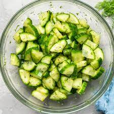

Nina's Cucumber

Description
Truly, a one of a kind recipe that has been passed down from the ancient vegetarians. It is mentioned that the vegetarians would eat this before heading off for meditation in secluded areas.
Ingredients
- half cup of fat-sour cream
- 2 tablespoons fresh lemon juice
- 2 table spoons chopped fresh dill
- 3 cucumbers,halved lengthwise and crosswise
- half cup thinly sliced red onion
- salt and pepper
Steps
- Mix sour cream, lemon juice, and dill together in a bowl. Add cucumbers and onion; stir to combine. Season with salt and black pepper.